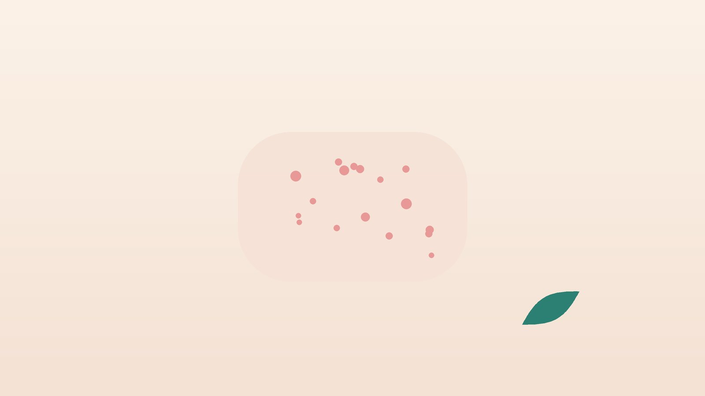

건강 칼럼 · 인천 태열 한의원
아기 볼이 붉고 오돌토돌하다면, 태열 한방 관리

우리 아기 피부, 이런 모습인가요?
- 양쪽 볼이 붉고 오돌토돌하며 거칠다
- 두피나 눈썹에 노랗고 기름진 비늘 같은 딱지가 앉았다
- 얼굴을 이불이나 엄마 옷에 비비고 손으로 긁으려 한다
- 목 주름, 귀 뒤, 팔다리 접히는 곳이 붉고 짓무른다
- 더운 방에 있거나 울고 나면 붉은 기가 더 심해진다
- 가족 중 아토피, 비염, 천식이 있는 사람이 있다
이 체크리스트는 진단 도구가 아니라 상담이 필요한지 가늠해 보는 참고용입니다.
태열, 습진, 아토피는 어떻게 다른가요?
지루성피부염은 생후 몇 주부터 석 달 무렵까지 두피, 눈썹, 귀 뒤, 기저귀 부위에 노랗고 기름진 딱지가 생기는 형태로, 대개 가렵지 않고 돌 전후로 저절로 좋아지는 경우가 많습니다. 영아 습진은 볼과 이마에 붉은 좁쌀 같은 발진이 올라오는 것으로, 침, 땀, 마찰, 건조한 공기에 쉽게 심해집니다.
아토피피부염은 가려움이 뚜렷하고 좋아졌다 나빠지기를 몇 달 넘게 반복하는 것이 특징입니다. 영아기에는 볼, 두피, 팔다리 바깥쪽에 잘 생기며, 가족력이 있는 경우가 많습니다. 생후 몇 달은 세 가지가 섞여 보여, 가려움과 경과를 몇 주 지켜보며 판단합니다. 영국 NICE의 12세 미만 아토피 지침도 보습제를 바탕에 두고, 심할 때 처방 연고를 단계적으로 더하도록 권합니다.
이럴 땐 소아청소년과부터 가 보세요
- 진물이 흐르거나 노란 딱지가 넓게 번진다 (세균 감염 확인)
- 작은 물집이 무리 지어 생기고 움푹 파인 상처로 빠르게 퍼진다 (헤르페스 감염 확인, 응급)
- 열이 나거나 아기가 축 처지고 잘 먹지 않는다
- 생후 100일이 안 된 아기의 체온이 38도를 넘는다
- 몸무게가 잘 늘지 않거나 설사, 구토가 반복된다
- 특정 음식을 먹은 직후 입 주변이 붓거나 두드러기가 생긴다
특히 물집이 번지면서 열이 나는 경우는 습진 위에 바이러스 감염이 겹친 것일 수 있어 그날 바로 진료를 받아야 합니다.
한의학에서 말하는 태열은 무엇인가요?
태열(胎熱)은 엄마 배 속에서 받은 열이 태어난 뒤 피부로 드러난다는 뜻의 한의학 용어로, 『동의보감』 소아 편에도 갓난아기의 태열과 태독(胎毒)이 등장합니다. 엄마가 무엇을 잘못 먹어서 생겼다는 뜻은 아니며, 체온 조절이 서툴고 피부 장벽이 얇은 아기가 열기와 자극에 먼저 반응한다는 관찰을 담은 말에 가깝습니다.
한의학에서는 붉고 열감이 있는 피부는 열을 식히고, 진물이 나는 피부는 습을 말리며, 건조하고 거친 피부는 진액을 보태는 방향으로 다스려 왔습니다. 그러나 아기의 몸은 매우 여리므로 약으로 다스리기보다 덥지 않게 입히고 피부를 촉촉하게 지켜 스스로 안정되기를 돕는 것이 먼저입니다.
우리 아기 피부는 어떤 유형일까?
아기 피부는 하루에도 여러 번 바뀌므로, 가장 자주 보이는 모습을 기준으로 나누어 봅니다.
1. 열성(熱盛) 붉고 화끈거리는 피부
- 이런 분에게 많아요
- 열이 많고 땀을 잘 흘리는 아기
- 나타나는 모습
- 볼이 새빨갛고 따뜻하며, 더운 방이나 수유 뒤에 더 붉어진다
- 함께 오는 몸의 신호
- 잠투정, 변이 단단함
- 진찰에서 보이는 모습
- 피부가 붉고 만지면 따뜻함
- 치료 방향
- 열을 식히고 덥지 않게 지내는 방향
- 오늘부터 해 볼 것
- 실내 온도를 22~24도로 맞추고 한 겹 얇게 입혀 보세요.
2. 습성(濕盛) 짓무르고 진물이 비치는 피부
- 이런 분에게 많아요
- 살이 통통하고 접히는 부위가 많은 아기
- 나타나는 모습
- 목 주름, 귀 뒤, 겨드랑이가 붉게 짓무르고 축축하다
- 함께 오는 몸의 신호
- 침을 많이 흘림, 묽은 변
- 진찰에서 보이는 모습
- 접히는 곳이 습하고 피부가 들떠 있음
- 치료 방향
- 습기를 말리고 피부를 보호하는 방향
- 오늘부터 해 볼 것
- 씻긴 뒤 접힌 부위를 가볍게 두드려 말리고 보습제를 얇게 바르세요.
3. 조성(燥盛) 건조하고 거친 피부
- 이런 분에게 많아요
- 겨울이나 환절기에 심해지는 아기
- 나타나는 모습
- 팔다리와 몸통이 하얗게 일어나고 거칠며 긁는다
- 함께 오는 몸의 신호
- 밤에 뒤척임, 입술 건조
- 진찰에서 보이는 모습
- 피부가 거칠고 각질이 많음
- 치료 방향
- 진액을 보태 피부 장벽을 돕는 방향
- 오늘부터 해 볼 것
- 보습제를 하루 2번 이상, 목욕 직후 3분 안에 듬뿍 발라 주세요.
4. 두피 비늘형 노란 딱지가 앉는 피부
- 이런 분에게 많아요
- 생후 2~3개월 무렵 아기
- 나타나는 모습
- 정수리와 눈썹에 노랗고 기름진 딱지가 붙는다
- 함께 오는 몸의 신호
- 가려움은 거의 없음
- 진찰에서 보이는 모습
- 두피 기름기와 비늘
- 치료 방향
- 자연히 좋아지기를 기다리며 부드럽게 관리하는 방향
- 오늘부터 해 볼 것
- 목욕 전 보습 오일로 딱지를 불린 뒤 부드러운 빗으로 살살 빗어 주세요.
한의원에서는 어떻게 진찰하나요?
- 발진 경과: 언제 시작했는지, 어디에서 어떻게 번졌는지, 가려워하는지를 여쭙니다.
- 생활 환경: 목욕 횟수와 물 온도, 세정제와 보습제, 실내 온도·습도, 옷과 침구를 확인합니다.
- 수유와 성장: 수유 방식, 이유식 진행, 몸무게 증가와 배변 상태를 봅니다.
- 피부 관찰: 발진의 색과 분포, 진물·딱지 여부, 감염 신호를 살피고 필요하면 소아청소년과 진료를 안내합니다.
아기에게 침이나 한약을 써도 되나요?
1. 침 치료
돌 전 영아에게는 침을 쓰지 않습니다. 돌이 지나고 가려움 때문에 잠을 못 이루는 아이라면, 피부를 뚫지 않고 붙이기만 하는 소아 스티커침을 발진이 없는 부위에 짧게 붙여 보는 정도로 최소한만 고려합니다.
- 곡지(曲池): 팔꿈치를 굽혔을 때 생기는 주름의 바깥쪽 끝. 피부에 오른 열기를 가라앉힐 때 활용합니다.
- 혈해(血海): 무릎뼈 안쪽 위 모서리에서 아이 손가락 세 개 너비 위. 가려움을 다스리는 혈입니다.
- 족삼리(足三里): 무릎 바깥 아래 오목에서 손가락 네 개 너비 아래. 소화와 기운을 돕습니다.
- 합곡(合谷): 손등에서 엄지와 검지 뼈가 만나는 곳의 약간 앞. 얼굴 쪽 증상에 씁니다.
2. 약침
영유아와 어린이에게는 약침을 쓰지 않습니다.
3. 한약
영아 습진의 대부분은 보습과 생활 관리로 다스릴 수 있어 한약이 꼭 필요하지 않은 경우가 많습니다. 가려움이 심하고 오래가 돌 이후 아이의 잠과 수유에 지장이 클 때에 한해, 체중에 맞춘 아주 적은 양의 탕약을 쓴맛이 덜한 약재로 짓고 반응을 자주 확인합니다. 단것을 조금 타서 먹여도 되지만 돌 전 아기에게 꿀은 절대 넣지 마세요. 처방받은 연고나 보습제, 분유 종류를 알려 주시면 확인해 처방합니다.
원장님이 네이버 블로그에 진료 이야기와 건강 정보를 꾸준히 올리고 있습니다. 더 많은 이야기는 블로그에서 확인해 보세요.
블로그 보기관리는 어떤 순서로 진행되나요?
- 첫 진료 감염 신호가 없는지 확인하고, 목욕·보습 방법을 아기 피부에 맞춰 안내합니다.
- 1~2주 보습 습관과 실내 환경을 바꾸고 사진으로 변화를 기록합니다.
- 3~4주 붉은 범위와 가려움, 밤잠을 처음과 비교합니다. 필요하면 소아청소년과 연고 치료를 함께 안내합니다.
- 이후 돌 전후와 계절이 바뀌는 시기에 피부 상태를 다시 점검합니다.
영유아 피부는 자라면서 크게 달라지므로, 사진 기록과 아기의 잠·수유 상태를 보며 관리 기간을 정합니다.
집에서 하는 아기 피부 관리
- 짧은 목욕: 미지근한 물(37도 전후)로 5~10분 안에 씻기고, 세정제는 향이 없는 약산성 제품을 접히는 곳에만 소량 씁니다.
- 바로 보습: 수건으로 문지르지 말고 눌러 닦은 뒤 3분 안에 보습제를 듬뿍 바릅니다. 하루 2번 이상이 좋습니다.
- 침과 땀 닦기: 수유 뒤 입 주변은 물 묻힌 거즈로 닦고 보습제를 덧발라 줍니다.
- 옷과 손톱: 면 소재의 헐렁한 옷을 입히고, 손톱은 짧게 다듬어 긁어서 생기는 상처를 줄입니다.
- 엄마 식단: 모유 수유 중인 엄마가 근거 없이 특정 음식을 끊을 필요는 없습니다. 특정 음식과 증상이 반복해서 겹친다면 진료 때 상의해 확인하세요.
다른 진료가 함께 필요한 경우
- 진물, 노란 딱지, 번지는 물집, 열이 있다면 소아청소년과 진료를 먼저 받으세요.
- 보습만으로 가라앉지 않는 붉은 발진은 처방 연고가 필요할 수 있습니다. 처방받은 연고는 지시대로 쓰고 임의로 끊지 마세요.
- 음식을 먹은 뒤 두드러기나 붓기가 생긴다면 식품 알레르기 검사를 상담하세요.
- 몸무게가 잘 늘지 않는다면 소아청소년과에서 성장과 영양을 확인하세요.
자주 묻는 질문 Q&A
- Q1. 태열은 크면 저절로 없어지나요?
- 지루성피부염과 영아 습진은 몇 달 사이에 좋아지는 경우가 많습니다. 가려움이 심하고 오래간다면 아토피피부염 가능성을 살펴야 합니다.
- Q2. 스테로이드 연고를 써도 되나요?
- 의사가 처방한 약한 연고를 정해진 부위와 기간 동안 쓰는 것은 아기에게도 쓰이는 방법입니다. 무조건 피하기보다 지시대로 쓰세요.
- Q3. 모유 수유 중인데 제가 음식을 가려야 하나요?
- 근거 없이 식단을 제한하지 않는 것이 좋습니다. 특정 음식과의 관계가 의심될 때만 진료 후 확인합니다.
- Q4. 돌 전 아기도 한의원 치료를 받을 수 있나요?
- 돌 전 아기에게는 침을 쓰지 않으며, 주로 목욕·보습·환경 관리를 안내합니다.
- Q5. 한약을 먹여도 안전한가요?
- 꼭 필요한 경우에만 체중에 맞춘 아주 적은 양으로 짓고 반응을 자주 확인합니다. 먹이기 힘들어 단맛을 더하더라도 돌 전에는 꿀을 피해야 합니다.
- Q6. 보습제는 어떤 것이 좋나요?
- 향료가 없고 아기가 잘 견디는 제품이면 충분하며, 비싼 제품보다 자주 넉넉히 바르는 것이 중요합니다.
- Q7. 목욕은 매일 해도 되나요?
- 미지근한 물로 짧게 씻기고 바로 보습한다면 매일 해도 괜찮습니다.
- Q8. 이유식을 늦게 시작해야 하나요?
- 습진이 있다고 이유식을 일부러 늦출 필요는 없습니다. 시작 시기는 소아청소년과와 상의하세요.
문원열 대표원장한의사 · 365스마일한의원
인천 서구 가정동 한자리에서 10년 넘게 진료하며, 환자 한 분 한 분의 아픔을 깊이 들여다보고 근본적인 원인을 찾는 진료를 지향합니다.
진료 안내
- 진료시간
- 평일 09:00~20:00 (점심시간 13:00~14:00)
토·일·공휴일 09:00~15:00 - 주소
- 인천광역시 서구 가경주로 46, 2층 (가정동)
인천2호선 가정중앙시장역 인근
영상으로 길 안내 보기 → - 주차
- 한의원 건물 바로 앞 1층 도원주차장
- 예약
- 예약 바로가기 또는 전화 예약
진료시간은 사정에 따라 바뀔 수 있으니 방문 전 전화로 확인해 주세요.
함께 읽으면 좋은 칼럼
건강 칼럼 전체 보기 →

참고 자료
- NICE Clinical Guideline CG57. Atopic eczema in under 12s: diagnosis and management — 원문
- 허준, 『동의보감(東醫寶鑑)』 잡병편 소아(小兒): 태열(胎熱)·태독(胎毒)
- 질병관리청 국가건강정보포털 — 원문
※ 이 글은 일반적인 건강 정보이며, 개인의 상태에 따라 치료 방법과 결과는 다를 수 있습니다. 정확한 진단과 치료는 진료를 통해 결정됩니다. 침·약침 시술 후 드물게 멍, 통증 등이 생길 수 있습니다.